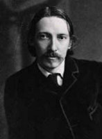

(1850 – 1894)

Canı sıkılan üvey oğlunu eğlendirmek için bir kağıda aslında var olmayan bir definenin gömülü olduğu yeri gösteren bir harita çizen Robert Louis Stevenson, oğlunun sorularına yanıtlar verirken en ünlü romanı "Define Adası" için esin topladığını bilmiyordu elbette ama afacan oğlanın bu cinliği sayesinde dünya edebiyatı unutulmaz bir roman kazandı.
İskoç romancı ve şair Robert Louis Stevenson, 13 Kasım 1850 günü Edinburgh'da, Thomas ve Margaret Stevenson'ın tek çocuğu olarak dünyaya geldi. Çocukluğunda onu hayatı boyunca bırakmayacak olan bir hastalık geçirdi. Bugün bu hastalığın verem olduğu düşünülmektedir. Sağlık durumundan dolayı okula devam edemedi, evde özel öğretmenler tarafından eğitildi.
Babası Thomas'ın 17 yaşındaki oğlunu Edinburgh Üniversitesi'ne kaydettirmesinden sonra ailesiyle arasında anlaşmazlıklar ortaya çıktı. Üniversite hayatına başlamasıyla Stevenson bohem bir hayat tarzı benimsedi. Ailesinin dini inançlarını reddetti, evli kadınlarla ve hayat kadınlarıyla ilişkiler kurdu. Stevenson üniversitede romantik bir genç olarak hocalarının dikkatini çekse de derslerine pek önem vermedi. Zamanını Edinburgh sosyetesinin içinde geçirdi. Babası, oğlunun nesiller boyu Stevenson ailesinin mesleği olagelen mühendisliği sürdürmesini istiyordu, ancak Louis Stevenson hukuk okumayı tercih etti. 1875'te sınavını geçerek diplomasını alsa da mesleğini icra etmedi. Diplomasını aldıktan sonra Avrupa'yı gezmeye karar verdi. Amacı, sağlığı için elverişli bir yer bulmaktı. Bu arada yazmaya devam etti. Stevenson, Fransa'nın dağlık ve kırsal kesiminde bir geziye çıktı ve burada yaşadıklarını "Bir Eşekle Seyahat" adlı kitabında anlattı (1878). Ailesi onun bu yaptıklarını bir zaman kaybı olarak değerlendirse de o aslında yazı stilini geliştirmek ve yaşam bilgisini artırmak için uğraş vermekteydi.
Stevenson üvey oğlu Llyod Osbourne ile oyun olsun diye çizdikleri bir haritadan aldığı esinle ünlü eseri Define Adası'nı yazdı. Oğlu kitabı "bir harita, bir define ve terkedilmiş bir gemiyle ilgili olsun; içinde kadın olmasın" şeklinde ısmarladığı için kitapta kadınlara yer verilmediği söylenir. Eser 1881-1882 yıllarında bir çocuk dergisinde dizi olarak yayımlanmış, 1883 yılında kitap olarak basılmıştır. Tropikal adalarda "x" işaretli hazine haritalarıyla hazine arayan, eli kancalı, omzu papağanlı korsan tipinin yaygınlaşmasında bu kitabın çok büyük rolü oldu.
Güney Fransa'da gezerlerken Stevenson'ın tekrar hastalanması üzerine eşi ve üvey oğlu ile birlikte tekrar İngiltere'ye döndüler ve İngiltere'nin güneyinde Bournemouth'a yerleştiler (1884). Yaşadıkları yere "Skerryvore" adını vermişlerdi. Skerryvore, üzerinde Stevonson'ın amcası Alan Stevenson'ın büyük güçlüklerle inşa ettiği, İskoçya'nın en uzun deniz feneri olan mercan adasının adıydı.
Stevenson dönemin birçok ünlü edebiyatçısıyla yakın arkadaştı. Leslie Stephen, W. E. Henley, Edmund Gosse ve Henry James gibi isimlerle Bournemouth'ta oldukça fazla vakit geçirdiği bilinmektedir. Stevenson bu dönemde ünlü Kaçırılan Çocuk ve Dr. Jekyll ve Bay Hyde adlı eserlerini (1886) yayımladı.
Stevenson cüzzamlı hastaların karantina altında yaşadığı, Hawaii Adaları'ndan biri olan Molokai'yi, Peder Damien'ın misyonerlik yaptığı bir koloniyi incelemek için ziyaret etti. Akciğer kanaması onu Samoa'da durmaya zorlayana kadar Doğu Pasifik'i gezdi. Güney Kıyılarında ve Peder Damien adlı eserleri 1890'da yayımlandı. Seyahat edemez olunca Samoda'da bir arazi aldı ve yerleşti. Yerli dilinde "masalcı" anlamına gelen Tusitala adını benimsedi ve yerel siyasete atıldı.
1892'de güçlü Batı devletlerine karşı Samoa haklarını korumak için bir kampanya başlattı ve Tarihe Bir Dipnot: Samoa'daki Sorunun Sekiz Yılı adlı eserini yayımladı. 1893'te Samoalı bir kabile şefini destekleyince isyancı ilan edildi ve Samoa'dan sürülmenin eşiğine geldi.
Robert Louis Stevenson, bitseydi "en büyük eseri" olacağı düşünülen "Weir of Hermiston" adlı eseri üzerinde çalışırken 3 Aralık 1894 günü, 44 yaşında beyin kanaması sonucu hayatını kaybetti ve vasiyeti üzerine, Samoa'daki Vaea Tepesi'ne gömüldü.
Seçme Romanları: Define Adası (1883 – Epsilon Yayınları, 2009), Dr. Jekyll ve Bay Hyde (1886 – İletişim Yayınları, 2006), Kaçırılan Çocuk (1886 – Türkiye İş Bankası Yayınları, 2009), Kara Ok (1888)